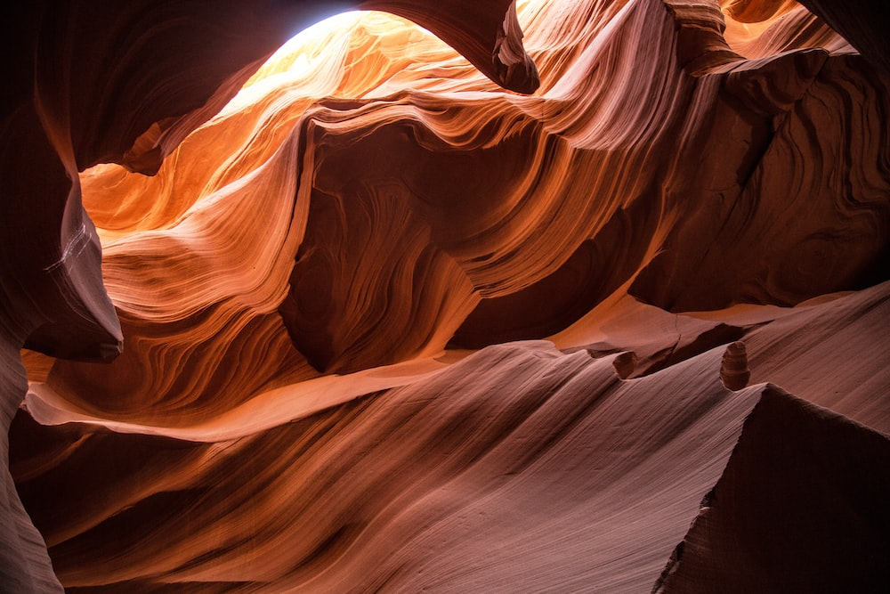
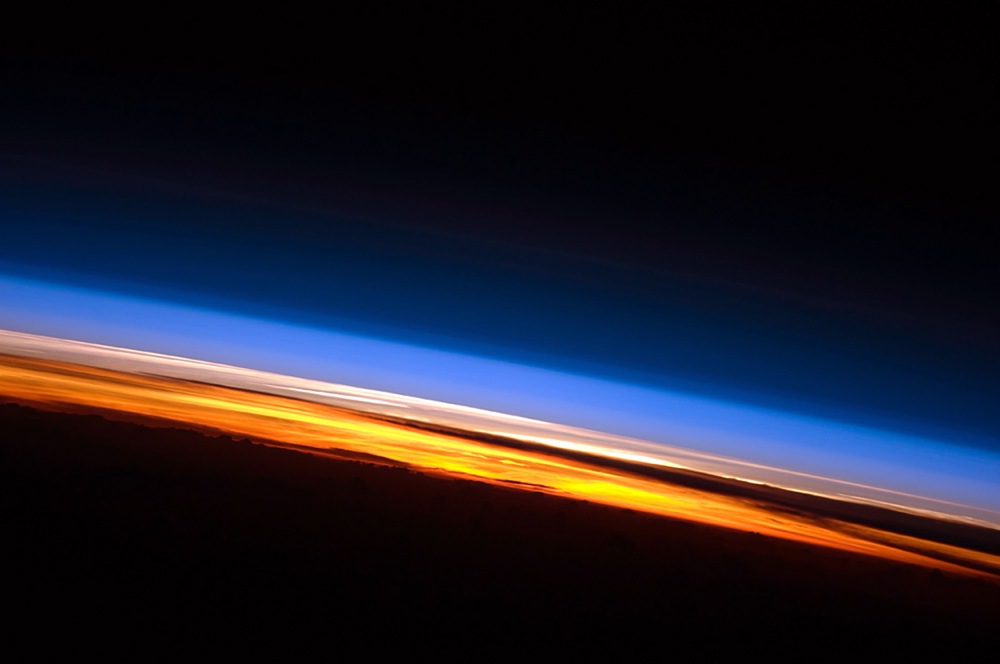

Welcome to our Mars-focused website, where we embark on an exciting journey to explore our next home. Get ready to dive into the wonders of Mars as we uncover its mysteries and share the knowledge that awaits us there. Let's begin our Martian adventure without delay!
Celestrial Details
Mars is the fourth planet and the furthest terrestrial planet from the Sun.
The reddish color of its surface gives it the nickname "the Red Planet". Like the other planets in the Solar System, Mars was formed 4.5 billion years ago. Mars is among the brightest objects in Earth's sky, and thus has been known from the ancient times. The Romans named it for the god of war, Mārs
Mars is both strikingly similar yet so different from Earth


Geology
Of all the planets in the Solar System, the seasons of Mars are the most Earth-like,
due to the similar tilts of the two planets' rotational axes. The lengths of the Martian seasons are about twice those of Earth's because Mars's greater distance from the Sun leads to the Martian year being about two Earth years long.
Martian surface temperatures vary from lows of about -110 °C (-166 °F) to highs of up to 35 °C (95 °F) in equatorial summer.
Atmosphere
Water in its liquid form cannot exist on the surface of Mars due to low atmospheric pressure, which is less than 1% that of Earth,except at the lowest of elevations for short periods. The two polar ice caps appear to be made largely of water. The volume of water ice in the south polar ice cap, if melted, would be enough to cover the entire surface of the planet with a depth of 11 metres (36 ft).
